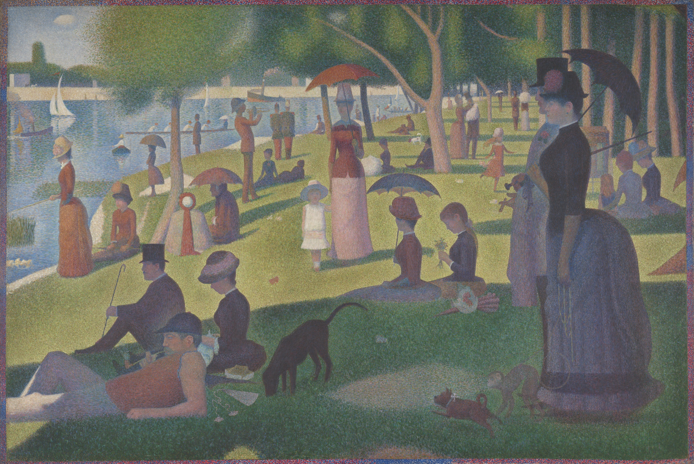
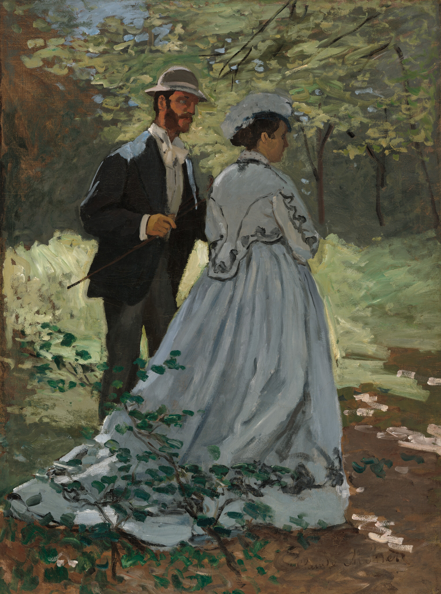
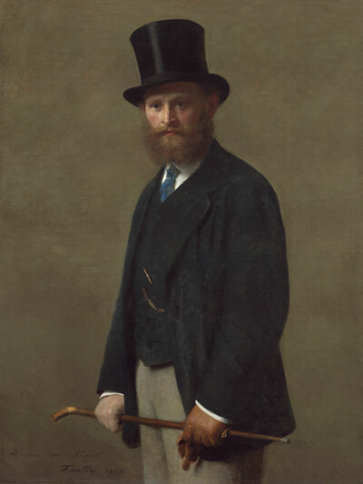
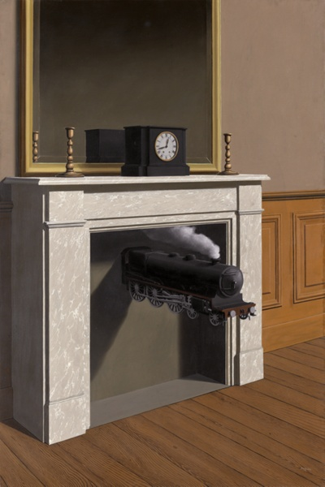

-
Exhibitions 當 期 展 覽
The Poetry of Light and Shadow
光影詩篇：印象派大師之藝
印象派，作為一個顛覆傳統的藝術運動，打破了當時學院派繪畫的僵化規範，以捕捉瞬間光影、自然景象和真實生活為核心。這是一場探索視覺與感知邊界的旅程，邀請您深入了解印象派的藝術魅力與其對後世藝術的深遠影響。
-
Claude Monet
聖阿得列斯海灘
克勞德·莫內在諾曼第渡過了他的大部分童年和青少年時期，欣賞那如畫的沿海地區、村莊和制高點風景。
-
Gustave Caillebotte
雨天的巴黎街道
畫作的主題是設定在下雨天的巴黎街上，人們撐傘的模樣，看似很市井小民生活的題材，卡耶伯特卻用了印象派強調光影色彩的筆觸，讓整幅畫有暗中帶亮的效果。

Collections 典藏系列
-
1

撐陽傘的女人
Claude Monet
B1-A3展區-5號位置
-
2

聖雷札火車站
Claude Monet
B1-B1展區-第4號位置
-
3
睡蓮 1919
Claude Monet
B1-C2展區-第7號位置
-
4
班納庫爾的塞納河畔
Claude Monet
B1-D4展區-第9號位置
-
5
巴吉爾和卡蜜拉
Claude Monet
B1-D4展區-第9號位置
-
6
年輕女子與牡丹花
Frédéric Bazille
B1-D4展區-第9號位置
Artists 熱門藝術家

Rembrandt van Rijn

Vincent van Gogh
Artworks 最新展覽品
-

美國哥德式
-

閱讀的女子
-

邁向身分認同
-

墨西哥牛仔
-

馬賽爾‧杜尚
-

茂登旅館
-

彈鋼琴的女人
-

神奈川衝浪裏
-

愛德華‧馬奈
-

印度坐佛
-

藍與綠的音樂
-

時間的凝滯
Visitor Information
參觀資訊
-
票價資訊
提供美術館開館時間、門票價格的詳細資訊。
-
館內導覽
提供館內各展廳位置、設施和參觀動線，方便訪客規劃參觀路線。
-
訪客守則
列出參觀規則與無障礙設施，包括輪椅通道和輔助服務。
-
交通資訊
提供停車資訊、公共交通指南及鄰近餐飲選擇，讓訪客輕鬆安排行程。